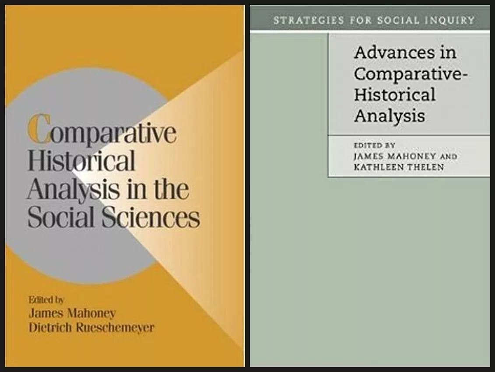
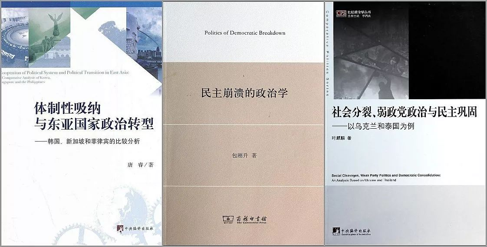

比较历史分析应用指南
原创 政观编辑部
政文观止Poliview
微信号 zhengwenguanzhi
功能介绍 从一群年轻人的视角出发，专业、专注、专解海内外比较政治经济研究的前沿佳作。
__发表于
#历史政治学 58 个
#比较政治学 121 个
在之前的推送中，政观编辑部已经为大家介绍了许多运用不同社会科学研究方法的学术成果。随着学界“科学化”的不断推进，定量研究及其各种培训班已如雨后春笋在国内发展起来。相较于炫酷的技术，许多同学不禁会问，定性研究是否也会有“定式”，以及定性研究应该如何操作。长期以来，不少学者对定性研究存在很多的偏见——类似于许多人认为文科生的获取知识仅是背书而已——本次，我们为读者们奉献“曾经让比较政治学如日中天”的比较历史分析（comparative historical analysis）的一些简单应用指南，并以国内既有的研究予以对照。由于编者水平有限，其中不免多有疏漏。我们诚挚欢迎各种批评与建议，共同为推动比较历史分析在中国的发展与繁荣做出贡献。
一、当我们谈论比较历史分析的时候我们在谈论什么
在简要介绍比较历史分析在国内发展情况之前，有必要搞清几个前提性问题。
1. 什么是比较历史分析？
可以对照CHA两本综述性的著作所做出的经典定义
Comparative Historical Analysis in Social Science (2003): concerned with explanation and the identification of causal configurations that produce major outcomes of interest；analyze historical sequences and take seriously the unfolding of processes over time；systematic and contextualized comparisons of similar and contrasting cases。
Advances in Comparative-Historical Analysis (2015): Macroconfigurational research；Case-based research；Temporally oriented research。

这两个定义具有很大的相似性，不难看出，着眼宏大问题、立足案例研究以及对时间性的关注是比较历史分析的核心特征。
在讨论CHA的核心和边界时关键在于“谁的”CHA。从学者的研究主体来看，2003年尚且是政治学与社会学均持半壁江山，而到了2015年则几乎都是政治学的学者了（其中原因耐人寻味）。
2. 比较历史分析和历史社会学（H istorical sociology, HS ）以及历史制度主义（H istorical institutionalism, HI ）有什么联系与区别？
比较历史分析作为一种方法论的总结，因此可以说来源于对社会学中的历史社会学以及政治学中的历史制度主义的研究成果。
斯考切波认为历史社会学有三种研究路径：以一般模型解释历史（如结构功能主义、“第二代革命理论”等）、运用概念发展出有意义的历史解释（如汤普森的《英国工人阶级的形成》、克利福德·格尔茨的文化诠释等）以及解释历史中的偶然性规律（自然是摩尔、斯考切波等人的作品）。因此HS第三种路径中使用比较方法的研究即可看作CHA的作品。
HI和CHA的交集则更大：在2003年，研究者认为二者的区别仅仅体现在研究是否有“系统的比较”；但从2015的发展势头来看，CHA很大程度上已经成为了HI，在强化纵向演进的同时弱化了横向比较，这种“狭隘化”的做法是否有益仍需要继续观察。
值得注意的是，无论是CHA还是HS或是HI，其创立或发展中都共享着一个重要的人物，即哈佛大学社会学系和政府系教授西达·斯考切波：在《国家与社会革命》一书中，斯考切波明确表明其研究方法为“比较历史分析”，并在 Comparative Historical Analysis in Social Science 中写了最后一章论述了CHA的双重使命；在《历史社会学的视野与方法》中，斯考切波认为“社会学的历史想象力”甚至不是社会学的一个分支而是社会学一以贯之的核心秉性； Structuring the Politics: Historical Institutionalism in Comparative Analysis 这本确定历史制度主义学科传统的开山之作则认为此概念最先提出的学者就是斯考切波与彼得·霍尔。
3. 因果类型
Gary Goertz与James Mahoney在《两种传承》认为定性研究有两种重要的分析工具，即“案例内分析”和“逻辑学与集合论”，比较历史分析研究“结果的原因”而非“原因对结果的影响”。
蒂利在《欧洲的抗争与民主》中总结了四种解释民主化的方式。必要条件：鲁施迈耶等在《资本主义发展与民主》中认为工人阶级是民主的必要条件；变量：亨廷顿在《第三波》中认为解释性变量的存在是关键的；次序：林茨和斯泰潘在《民主的转型与巩固的问题》中论述的“转型学”；集群：如Barbara Geddes认为民主转型的进程取决于威权政体是军政府、独裁政体还是一党制亦或者这些的结合。蒂利特别借鉴了必要条件和集群论的观点，而反对变量论和次序轮，他在这本书中的研究则是关注“机制”（mechanism）。
比较历史分析强调原因（必要条件、充分条件、INUS条件以及SUIN条件，社会科学研究一般不存在充要条件）以及机制，反对功能主义、进步史观和经济决定论，同时反对“变量”（variable）性质的解释因素——这是许多研究者在不经意间容易犯的错误，Kendra L. Koivu和Erin Kimball Damman将这种因果类型称之为Quantitative emulation。
**
**
二、国内发展概况
接下来，我们将视野转向中国的比较历史分析。
在方法论层面，国内的研究首先是基于理论与方法的文献，包括括朱天飚的《比较政治经济学与比较历史研究》、花勇的《比较历史分析的学术演进和经典议题——因果关系的过程分析》以及诸多对历史制度主义的评述，高奇琦的《比较政治研究方法：经典争论与前沿进展》以及李路曲、李晓辉的《民主化、政治发展、比较历史分析研究评述》也对该研究路径有所提及。
然而引介只是第一步，好的方法论研究必须在引介的基础上对既有研究进行反思与超越，在这方面国内研究尚属起步阶段，比较有代表性的有：（1）杨光斌在《复兴比较政治学的根本之道：比较历史分析》反思西方比较政治学的现状，高度肯定了比较历史研究在学科发展和知识贡献上的独特地位，并总结了比较历史分析的结构- 时序论以及路径依赖范式；（2）郝诗楠、唐世平在《社会科学中的时间：时序和时机》中以西方几个经典国家的发展经验重申了“时间很重要”这一比较历史分析的核心特性。
在著作上层面，国内真正的基于比较历史分析的实证研究凤毛麟角，其中具有代表性的包括叶麒麟的《社会分裂、弱政党与民主巩固》》、唐睿《体制性吸纳与东亚国家民主转型》、包刚升的《民主崩溃的政治学》等。

三本书代表了两种因果分析方法：
以《民主崩溃的政治学》为代表的“决定论”研究：分裂的选民结构与离心型的政体这两个因素的结合导致了民主崩溃；
以《社会分裂、弱政党与民主巩固》和《体制性吸纳与东亚国家民主转型》为代表的过程/机制研究：前者通过“社会分裂→弱政治政治→阻碍民主巩固”以说明泰国和乌克兰在民主巩固过程中的种种障碍，尤其是作为中介变量的“弱政党政治”与社会分裂的关联性从而说明弱政党政治对民主巩固的消极影响；而后者则通过“体制性吸纳→精英派别间力量变化→政治转型过程”以解释东亚国家政治转型的不同类型，从而确定体制性吸纳对政治转型的作用。
其中《民主崩溃的政治学》收获了更多的关注，这本书和《国家与社会革命》具有很大的相似性。接下来，我们对这两本书进行简要对比，以说明CHA在中国发展的现状及某些缺憾。
1. 因果模型。两书同样使用的INUS条件的分析（所谓INUS条件即“结果的一个充分条件组中的一个必要组成部分”），我们借鉴“双层理论”（two- level theory）对两本书的因果关系进行对比（*代表“且”；+代表“或”）：
社会革命=国家崩溃*农民起义。国家崩溃=农作物歉收+国家缺乏自主性+军事失利；农民起义=农民自主性强+地主控制薄弱。
民主崩溃=分裂的选民结构*离心型政体。选民分裂程度=选民投票结构+政治议题+政治暴力；政体类型=央地关系+政府形式+政党体制。
- 负面案例的选择：那些可能发生却没有发生的案例。比较案例容易出现选择性偏差：Barbara Geddes（芭芭拉·格迪斯）认为解释发展中国家经济增长时由于许多学者仅考察发展成功的案例，因而得出了对劳工组织的压制有利于经济增长，然而如果案例扩大到发展不成功的国家，则这一结论变不成立。因此，负面案例的选择以及接下来所说的“范围条件”很大程度上是为了解决这些问题，其具体操作可参看The Possibility Principle: Choosing Negative Cases in QualitativeResearch。
《国家与社会革命》中挑选了日本、德国、英国、1905年的俄国作为负面案例，因此可以看出，单单存在国家崩溃或农民起义是不足以导致社会革命的。
《民主崩溃的政治学》批判了斯考切波“未能系统选择负面案例”是其研究的一缺陷，进而选取印度为负面案例：“在印度民主政治的前期，选民政治分裂程度维持在比较低的水平，而印度的宪法和政治制度属于典型的向心型民主。因此，印度民主维持了高度的稳定性。……20世纪60年代晚期之后……印度选民政治分裂程度不断提高……政治制度的向心程度有所降低……两者结合导致了20世纪80、90年代之后印度民主稳定性的相对降低。”
这就出现两个问题。（1）共变法在案例研究中无法给出确定的因果（变量太多案例太少），且原因变化导致结果变化是“概论论”而非“决定论”——以量化思维从事定性研究，即“自变量每改变一个单位，因变量也随之改变一个单位”，而定性研究则强调原因（原因组合）的出现导致结果的出现；（2）印度并不符负面案例的选择规则，正确的做法应该是至少存在X、Y这样两个负面案例：案例X具有“分裂的选民结构”和“向心型的政体”，民主崩溃未发生；在案例Y中具有“选民分裂程度较低”和“离心型政体”，民主崩溃也未发生。
- 范围条件：比较历史分析是对特定时空背景下的案例分析，因此其因果解释必然有一定的边界。
斯考切波研究的是那些“富裕的且未经历殖民统治的野心勃勃的农业国”，这样，二战后独立的绝大部分发展中国家所发生的社会革命与《国家与社会革命》的理论框架就没什么关系了。范围条件的意义在于告诉读者你提供了理论在何种情况下适用。
《民主崩溃的政治学》似乎并未明确说明范围条件，因此不少学者认为其忽视了军事政变等导致民主崩溃的其他形式。
- 冻结历史。《国家与社会革命》出版之后也受到了各种批评，例如Swell认为缺乏了对文化的关注；而Buraway则认为方法论上存在许多问题：例如，求同/求异法只能排除而无法给出确定的因果，同时会出现“冻结历史”的问题——密尔法是横向的、没有时间维度的，一些与时间有关的重要历史性机制和偶然时间就会被抹杀，甚至一些对历史不甚了解的学者甚至会把历史事件时空颠倒进而拼凑出一个叙事逻辑上勉强说得过去的故事。《民主崩溃的政治学》基于密尔法的比较也难免冻结历史的可能，过于结构主义的论说很大程度上缺乏少了对时间的敏锐性。值得注意的是，不少比较案例研究均采取了这样的叙述模式一下：首先提出自己的理论，其次在故事甲、故事乙、故事丙中分别论述理论是如何解释历史的。这样，历史仅仅成为了背景材料，即赵鼎新所谓的“有历史无时间”的比较。
接下来，我们看一下国外经典著作是如何进行“有历史且有时间”的比较的。
以James Mahoney的两本著作为例，这两本著作均获得美国政治学会和美国社会学会诸多奖项。在 The Legacies of Liberalism 中对政体类型的起源分析中，作者将历史划分为“先前条件”“历史关节点”和“制度再生产”三个时期，并在各自时期分别比较了中美洲五国的差异；而在 Colonialism and Postcolonial Development 里，作者分别展现了15个西属拉美国家在哈布斯堡王朝时期、波旁王朝时期所处殖民体系中的位置以及独立后的战争与冲突中的境况，进而揭示了不同发展水平的历史根源。同样的，可以参考Dan Slater在 Ordering Power 中对东南亚七国国家能力和威权韧性的比较。
将历史抽象为由“事件”组成的“序列”，我们可以称之为比较序列方法。Falleti论述有关拉美国家分权化研究中表明，分权改革并不必然如人们通常想象的那样带来地方势力的壮大，央地关系下权力的对比与分权下改革领域的顺序有关，如阿根廷经历的以行政- 财政-政治为序的分权改革反而增强了中央的实力，而与阿根廷分权改革前初始状态相似的巴西在经历了政治-财政-行政的分权改革后地方实力进一步增强。
**
**
三、如何进行比较历史分析：基于国内的既有研究
事实上，国内不少学者的研究也体现了比较历史分析的方法论特质。 Big Structures, Large Processes, Huge Comparisions 中有这样的名言：when things happen within asequence affects how they happen。因此我们首先从“序列”开始。
AB vs. BA：即事件的不同排列顺序导致了不同结果。例如，杨光斌在《早发达国家的政治发展次序问题》中提出，“建立共和（法治）”、“发展经济、“实现民主”这三件国家发展中重大事件的不同排列顺序，决定了英法德日等国不同的国家形态和现代化道路；王子帅和郝诗楠在《异常民主政体及其意义：以博兹瓦纳为例》中认为，“民主制的建立”和“丰富资源的发现”之间的先后顺序是能否避免“资源诅咒”的重要因素——不同于许多“食利国家”，博兹瓦纳在民主巩固之后才发现丰富的矿石，这很大程度上消解了“资源诅咒”的可能。
AB1 vs. AB2：社会科学中有很多的“有A则Y”论述，最经典的当属经济发展带来民主，许多比较历史分析的研究表明A之所以产生Y是与其他特定条件的结合。例如，田野和曹倩在《国际贸易、要素禀赋与政体类型的变迁》中对“经济全球化促进民主化”这一流行观点进行反思，认为在不同的要素禀赋下国际贸易会对政体类型的变迁产生不同的影响：当劳动要素充裕时，国际贸易往往会促进民主转型；当土地要素充裕时，国际贸易往往会促进威权巩固。黄琪轩在《“巴西奇迹”为何中断》中反思了诺斯等新制度经济学关于产权保护对经济发展的作用，通过对巴西的案例作者表明，在一个贫富悬殊的社会，强调对产权的保护，往往导致固化原本分化的社会结构，这样的制度安排不仅难以为经济发展提供持续的激励，相反，严重的贫富分化还会破坏社会的激励结构。
A in X vs. A in Y：即“时机”或“世界时间”，环境与结构不同，同样的政策或制度可能会收获不同的效果。陈玮和耿曙在《发展型国家的兴与衰：国家能力、产业政策与发展阶段》中认为，产业政策在国家发展的不同阶段会发挥不同的政策意义：在后发国家的“追赶阶段”，由于具有“方向明确、监督有效”的“信息优势”和“资源集中、创造规模”的“规模优势”，因此能够制定和实施有效的产业政策，成功实现赶超；然而到了“领先阶段”，产业政策在鼓励企业创新、分散创新风险上成效并不显著，甚至可能形成负面效果，若继续沿用，经济自然会遇到障碍。
机制的比较：关于“机制”的定义，十多年前Mahoney曾给出了24种之多。总结起来，大约有“中介变量”、“一系列事件”以及“引起变化的实体及其活动”——当然，KKV认为的“中介变量”显然最不靠谱。基于“机制”的比较历史分析，最具代表性的是叶成城、唐世平对“第一波半现代化”的研究，作者把前人研究中那些碎片化的真相融为一体，重新解释初始条件的组合如何影响到阶级力量的消长、权力斗争的过程以及大国的兴衰，在前人的基础上进一步探讨第一波现代化之谜，目前已发表《第一波半现代化：一个“因素”+“机制”的新解释》、《第一波半现代化之“帝国的黄昏”：法国与西班牙的改革之殇》、《第一波半现代化之“帝国的胎动”：18世纪普鲁士和奥地利的崛起之路》。
为了一方面给出确切因果关系，另一方面坚持多重因果的思路，QCA的引入也为比较历史分析在研究中扩大样本容量提供了可能。国内的定性比较分析主要集中于政策研究——政策研究在于提供路径而非解释，因此就无需苛求解的覆盖率了——在政治科学领域的代表性研究如郝诗楠、高奇琦的《分离主义的成与败：一项基于质性比较分析的研究》以及释启鹏、韩冬临《当代社会运动中的政权崩溃——“颜色革命”与“阿拉伯之春”的定性比较分析》等，然而这两篇文章均未能在给出条件组合之后展开很好的历史叙述。与此同时，社会科学中的很多重要事件本身就是小样本研究。
比较历史分析还有一个重要领域即制度变迁。相较于序列和机制的比较，国内对制度变迁的关注更为广泛。但令人遗憾的是，绝大部分的制度变迁的研究，其实都是对历史发展的梳理。“路径依赖”这个概念被广泛应用，然而在我们看来很多作品其实犯了“概念延展”的错误。关于路径依赖，研究者需要思考：
（1）什么是路径依赖？早期经济史上那种“过去影响现在”或“历史很重要”的论述太为宽泛，至少要仔细阅读Increasing Returns, Path Dependence, and the Study of Politics与Path Dependence in Historical Sociology等重要文献；
（2）变迁的动力与机制是什么？杨光斌早年提出的SSP范式（制度环境——制度安排——制度绩效）已经类似于“机制”，唐世平《制度变迁的广义理论》也提供了一个社会演化范式（SEP），保罗·皮尔逊尤其强调“权力”的重要性，等等。
除了“断裂均衡”的制度变迁模式，凯瑟琳·西伦等人的“渐进变迁模式”提供了更为普遍的变迁视野，马得勇、张志原的《观念、权力与制度变迁：铁道部体制的社会演化论分析》可能算是比较优秀的作品。但所有制度变迁研依旧面临两难；如果缺少形式化则容易流于历史叙述，而如果追求形式化不当，则容易变成结构功能主义那样僵化（甚至错误）的理论。
由此可见，制度变迁研究同样任重道远。
**
**
四、坚持与坚守
_
_
Advances in Comparative-Historical Analysis 的最后一章是WolfgangStreeck写的——比不上12年前斯考切波遒劲的笔触，甚至也不理解为什么最后的结尾是他写——在Byway of conclusion中，他写道：
“Big structures, large processes, hugecomparisons” (Tilly 1984), a search for “historically grounded explanations oflarge-scale and substantively important outcomes” (Mahoney and Rueschemeyer 2003), a “focus on macroconfigurational explanation,” the pursuit of “problem-drivencase-based research,” and a methodical “commitment to temporally orientedanalysis” (Thelen and Mahoney, Chapter 1, this volume) – this is howcomparativehistorical analysis began and how it will, hopefully, continue.
完全一副无奈且悲观的态势。
比较历史分析的创立与开拓，也正是一种激情与悲壮中完成的。
摩尔直到退休也没去谋取终身教职，在 Passion, Craft and Method in Comparative Politics 这本采访录中他是唯一一位没获得艺术与科学学院院士头衔或担任政治学会主席的学术巨擘；
蒂利因罹患淋巴癌辞世已有十年，这个留下五十多部著作和近七百篇论文的学者虽看透西欧千年兴衰却终究无法左右自己的命运；
斯考切波凭着热情与倔强早年东征西讨，为在国家中心主义、历史社会学以及革命研究的议程设定上立下了汗马功劳，虽壮志暮年如今也不免垂垂老矣；
唐宁与埃特曼，前者在完成《军事革命与政治变革》之前就离开学界，而后者凭借《利维坦的诞生》名动江湖之后也无再出彩的作品问世；
迪特里希·鲁施迈耶、大卫·科利尔、彼得·埃文斯、彼得·霍尔、杰克·戈德斯通、保罗·皮尔逊以及新当选美国政治学会主席的凯瑟琳·西伦，这些在各自领域推动比较历史分析的前辈早已走过了最旺盛的学术生涯；
Steven Levitsky、Dan Slater、Daniel Ziblatt、Giovanni Capoccia、Tulia Falleti等青年才俊各擅胜场，但他们举扛起比较历史的大旗尚需假以时日；
以及我们提到多次的James Mahoney，行走江湖二十余载，几乎偏执的写了一系列方法论文章之后，蓦然回首间新的狂澜即至，自己却已到了知天命之年。
更为悲情的是，从结构功能主义到量化研究以至最新的实验方法、大数据社会科学，比较历史的研究者们可能仅在八十年代以来的十余年间稍有喘息，而在大部分的时间里，在提供了巨大的知识宝藏同时却不得不艰难生存。
一位学者感慨，如今许多美国学生知晓《专制与民主的社会起源》竟然是源于阿西莫格鲁的《专制与民主的经济起源》，这不得不说是极大的悲哀。
然而，摩尔所开辟的道统，不正是在结构-功能主义一统江湖的背景下诞生的吗。
问：您一直笔耕不辍是想有所超越吗？
答：超越？我并没有那么雄心勃勃。以及我从没想超越帕森斯！我并不认为超越他是一个正确的想法（帕森斯所做完全是错的）。
这摩尔的执着，也是比较历史分析的坚持与坚守。
请支持我们的苹果用户请长按识别二维码赞赏
政观编辑部
感谢您的支持
微信扫一扫赞赏作者 __赞赏
已喜欢，对作者说句悄悄话
取消 __
发送给作者
发送
最多40字，当前共字
上一页 1/3 下一页
长按二维码向我转账
感谢您的支持
受苹果公司新规定影响，微信 iOS 版的赞赏功能被关闭，可通过二维码转账支持公众号。
预览时标签不可点
个
上一篇 下一篇
微信扫一扫
关注该公众号
微信扫一扫
使用小程序
： ， 。 视频 小程序 赞 ，轻点两下取消赞 在看 ，轻点两下取消在看